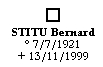
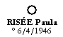
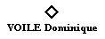
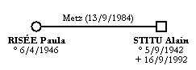
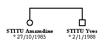
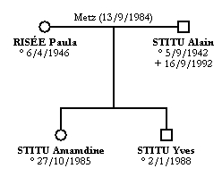
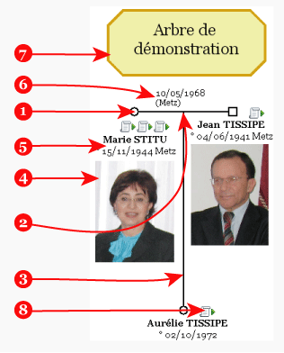

Un arbre généalogique utilise certains symboles pour représenter les personnes et leurs relations.
Pour les personnes, les symboles utilisés sont :
|  | un homme |
|  | une femme |
|  | une personne dont on ne connait pas le sexe |
Les relations se représentent par :
|  | l'union de deux personnes |
|  | une fratrie (ce sont les frères et soeurs issus des mêmes parents) |
|  | une famille |
|  | GénéGraphe met à votre disposition différents objets. Ce sont :
Suivant les cas, vous pouvez les utiliser ou non, les déplacer et changer leur présentation. |